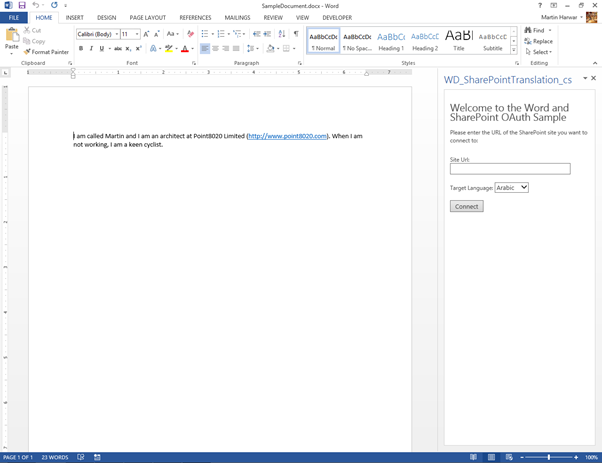
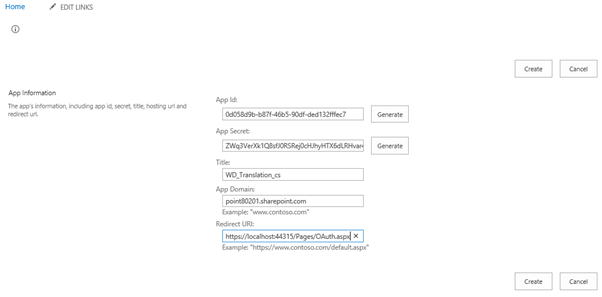
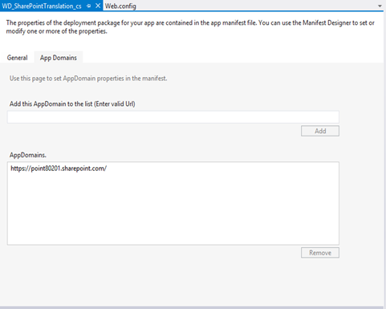

This sample app demonstrates how to use JavaScript and C# in a Word 2013 task pane app to connect to and authenticate a SharePoint Online site by using OAuth. The sample then shows how to use the SharePoint 2013 Translation Services to translate selected portions of a Word document.
Last modified: March 04, 2014
In this article
Description
Prerequisites
Key components of the sample
Configure the sample
Build the sample
Run and test the sample
Troubleshooting
Change log
Related content
Description
Provided by: Martin Harwar, Point8020
The app for Office includes a task pane app. It also includes a Word document with sample content to be translated, named SampleDocument.docx.
The SampleDocument.docx document is set as the StartAction property of the app for Office. The document uses some simple text that will be translated. Figure 1 shows how the document and the app will appear after you launch the solution.

The sample demonstrates how to use JavaScript to retrieve the selected text from the document. Then, the sample shows how to authenticate against a SharePoint site, and finally how to translate the selected text into a language chosen by the user.
Prerequisites
This sample requires the following:
-
Visual Studio 2012
-
Office Developer Tools for Visual Studio 2012
-
Word 2013
-
Access to an Office 365 Developer Site
Key components of the sample
The sample app contains the following:
-
The WD_SharePointTranslation_cs project, which contains the following:
-
The WD_SharePointTranslation_cs.xml manifest file.
-
The SampleDocument.docx document, which is prepopulated with some sample text for translation.
-
-
The WD_SharePointTranslation_csWeb project, which contains many template files. However, the files that have been developed as part of this sample solution are the following:
-
OAuth.aspx (located in the Pages folder)
-
TextTranslator.aspx (located in the Pages folder)
-
OAuthHelper.js (located in the Scripts folder)
-
RedirectAccept.js (located in the Scripts folder)
-
WD_SharePointTranslation_cs.js (located in the Scripts folder)
-
TokenCache.cs (located in the root folder)
-
TokenHelper.cs (located in the root folder)
-
Web.config (located in the root folder)
-
Web.debug.config (located in the root folder)
-
All other files are automatically provided by the Visual Studio project template for apps for Office, and they have not been modified in the development of this sample.
Configure the sample
Follow these steps to configure the sample.
-
Ensure that your Office 365 Developer Site has a shared document library with a title of Documents. (You should have one by default, but if you have ever deleted it you will need to re-create it).
-
Browse to the /_layouts/15/appregnew.aspx page your Office 365 site (for example https://<YourSiteName>.sharepoint.com/_layouts/15/appregnew.aspx)
-
Click both of the Generate buttons for App Id and App Secret, and enter the URL of your site as the App Domain. Then fill in the other text boxes as shown in Figure 2.
Figure 2. App registration page
 -
Click Create. Your page will resemble the screen shot in Figure 3, although with different field values.
Figure 3. App ID and App Secret needed for your project

-
Leave the page open so that you can refer to the data, and switch back to Visual Studio.
-
Double-click the WD_SharePointTranslation_cs item as shown in Figure 4, and then add your App Domain value. (Note that Figure 4 shows an App Domain of point80201.sharepoint.com; however, you should use the URL of your Office 365 Developer Site).
Figure 4. AppDomain dialog box
 -
Edit Web.config and Web.debug.config files so that they contain the ClientId and ClientSecret values that you generated from SharePoint.
-
When you are sure all the values have been configured correctly, save all files in Visual Studio and then close the web browser.
No other configuration is required.
Build the sample
To build the sample, press CTRL+SHIFT+B.
Run and test the sample
To run and test the sample, press F5.
The following images show examples of the workbook at various stages of the process. In Figure 5, the user has selected the desired text in the Word document and selected the Hindi language. The URL to the Office 365 Developer Site has been entered in the text box.

The original document is named SharePointSourceDocument.docx and has been saved to the library. Additionally, a document with the language code has been created. In this case, the document is called hi_Document.docx because we chose the Hindi language.
Troubleshooting
Ensure that you have SharePoint Server 2013 configured to host apps (with a Developer Site collection already created), or that you have signed up for an Office 365 Developer Site configured to host apps.
Change log
First release: January 2013.